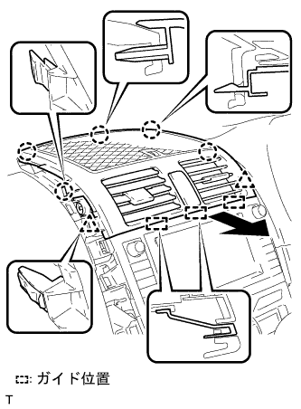
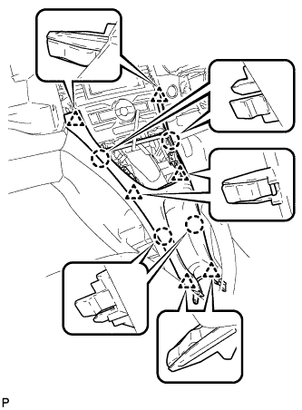
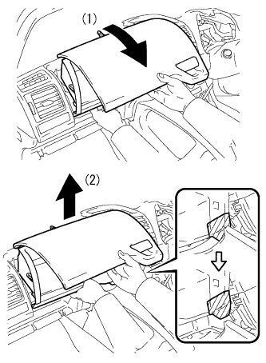
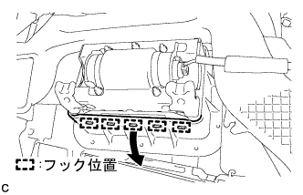
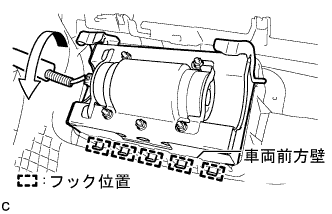
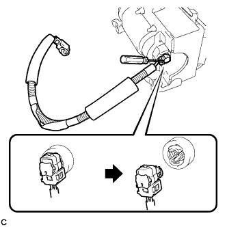
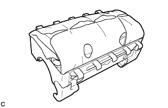

Instrument Panel Passenger Airbag Assembly (w/o Door) Removal |

| 1. Handling and Work Precautions |
)| 2. Check Front Wheels Straight-ahead Position |
| 3. Disconnect Battery Negative Terminal |
)| 4. Remove Instrument Panel Finish Panel End RH |
 |
Apply protective tape to the positions shown in the illustration.
Insert a roof molding remover and move it near the clip engagement as shown in the illustration.
 |
As shown in the illustration, pull the roof molding remover with both hands in the direction of the arrow to disengage the clip.
 |
Disengage the 3 clips and remove the instrument panel finish panel end RH.
| 5. Remove Instrument Cluster Finish Panel Assembly |
Operate the tilt lever to lower the steering wheel.
 |
Apply protective tape to the positions shown in the illustration.
 |
Disengage the 9 clips and 2 claws, and remove the instrument cluster finish panel.
| 6. Remove Combination Meter Assembly |
 |
Remove the 4 screws.
 |
Pull the combination meter assembly toward the rear of the vehicle, disconnect the connectors, and remove the combination meter assembly.
| 7. Remove Instrument Panel Finish Panel End LH |
 |
Apply protective tape to the positions shown in the illustration.
Insert a roof molding remover and move it near the clip engagement as shown in the illustration.
 |
As shown in the illustration, pull the roof molding remover with both hands in the direction of the arrow to disengage the clip.
Disengage the 3 clips and remove the instrument panel finish panel end LH.
| 8. Remove Instrument Panel Register Assembly CTR |
 |
Pull the instrument panel register assembly CTR horizontally toward the rear of the vehicle to disengage the 2 clips, 5 claws and 3 guides.
 |
Disconnect the connector and remove the instrument panel register assembly CTR.
| 9. Remove Front Pillar Garnish Corner Piece RH |
 |
Apply protective tape to the positions shown in the illustration.
Using a thin flat-tip screwdriver wrapped with protective tape, disengage the 5 claws and 2 guides A.
Disengage the 2 guides B and remove the front pillar garnish corner piece RH.
| 10. Remove Front Pillar Garnish RH |
 |
Pull the upper part of the garnish in the direction of arrow (1) shown in the illustration to disengage the clip and front pillar garnish clip.
Using nippers or equivalent, cut the front pillar garnish clip.
Pull the garnish in the direction of arrow (2) shown in the illustration, disengage the guide and remove the front pillar garnish RH.
Using a clip remover, remove the front pillar garnish clip from the front pillar RH.
 |
Curtain Shield Airbag Protection
Using cloth or nylon, wrap the airbag portion as shown in the illustration and fix both ends of the cloth or nylon with packing tape.
| 11. Remove Front Pillar Garnish Corner Piece LH |
| 12. Remove Front Pillar Garnish LH |
| 13. Remove Shift Lever Knob |
 |
Turn the shift lever knob in the direction of the arrow shown in the illustration to remove it.
| 14. Remove Console Box Cover RR |
 |
Using a thin flat-tip screwdriver wrapped with protective tape, disengage the 2 clips.
 |
Place your hand at the position shown in the illustration and disengage the 2 clips.
Disconnect the connectors and remove the console box rear cover.
| 15. Remove Position Indicator Housing Assembly |
 |
Disengage the 7 claws.
Disconnect the connector and remove the position indicator housing assembly.
| 16. Remove Instrument Panel Finish Panel LWR CTR |
 |
Remove the 2 screws <C>.
 |
Disengage the 6 clips and 4 claws, and remove the instrument panel finish panel LWR CTR.
| 17. Remove Glove Compartment Door Assembly |
 |
Disengage the claw and disconnect the glove compartment door stopper.
Slightly deform parts A and B shown in the illustration in the direction of the arrows, release the 2 stoppers and pull out the glove compartment door assembly until it is horizontal.
 |
Pull the glove compartment door assembly horizontally toward the rear of the vehicle, disengage the 2 hinge claws and remove the glove compartment door assembly.
| 18. Remove Instrument Cluster Finish End Panel |
 |
Pull the instrument cluster finish panel end horizontally toward the rear of the vehicle and remove the instrument panel cluster finish end.
| 19. Remove Instrument Panel Box Door Sub-assembly NO.1 |
 |
Remove the 2 screws <B>.
 |
Apply protective tape to the positions shown in the illustration.
Place your hand at the position shown in the illustration and disengage the clips and claws.
 |
Place your hand at the position shown in the illustration and disengage the 2 clips and 2 claws.
 |
Pull in the direction of the arrow shown in the illustration to pull out the upper part of instrument panel box No.1.
Pull in the direction of the arrow shown in the illustration and remove instrument panel box No.1.
| 20. Disconnect Instrument Panel Passenger Airbag Assembly Connector |
 |
Disconnect the instrument panel passenger airbag assembly connector.
| 21. Remove Instrument Panel UPR w/ Instrument Panel Passenger Airbag Assembly |
 |
Apply protective tape to the positions shown in the illustration.
Operate the tilt lever to lower the steering wheel.
Disconnect the connectors.
Remove the 2 screws <B>.
Remove the 2 instrument panel passenger airbag assembly installation bolts <A>.

Disengage the 4 clips and 3 claws.

Pull toward the rear of the vehicle, disengage the 5 claws and remove the instrument panel UPR w/ instrument panel passenger airbag assembly.

| 22. Remove Instrument Panel Passenger Airbag Assembly |
 |
Flex the vehicle rear wall of the airbag door and disengage the 5 rear side hooks.
 |
Rotate the instrument panel passenger airbag assembly as shown in the illustration, disengage the 5 front side hooks from the vehicle front wall of the airbag door and remove the instrument panel passenger airbag assembly.
| 23. Remove Instrument Panel Wire Assembly |
 |
Using a thin flat-tip screwdriver wrapped with protective tape, remove the instrument panel wire assembly connector.
| 24. Inspect Instrument Panel Passenger Airbag Assembly |
 |
Vehicles not involved in a collision
If any of the following applies, replace the instrument panel passenger airbag assembly with a new one.
 |
Vehicles involved in a collision in which the airbag did not deploy
Remove the instrument panel passenger airbag assembly, and if any of the following applies, replace the instrument panel passenger airbag assembly with a new one.